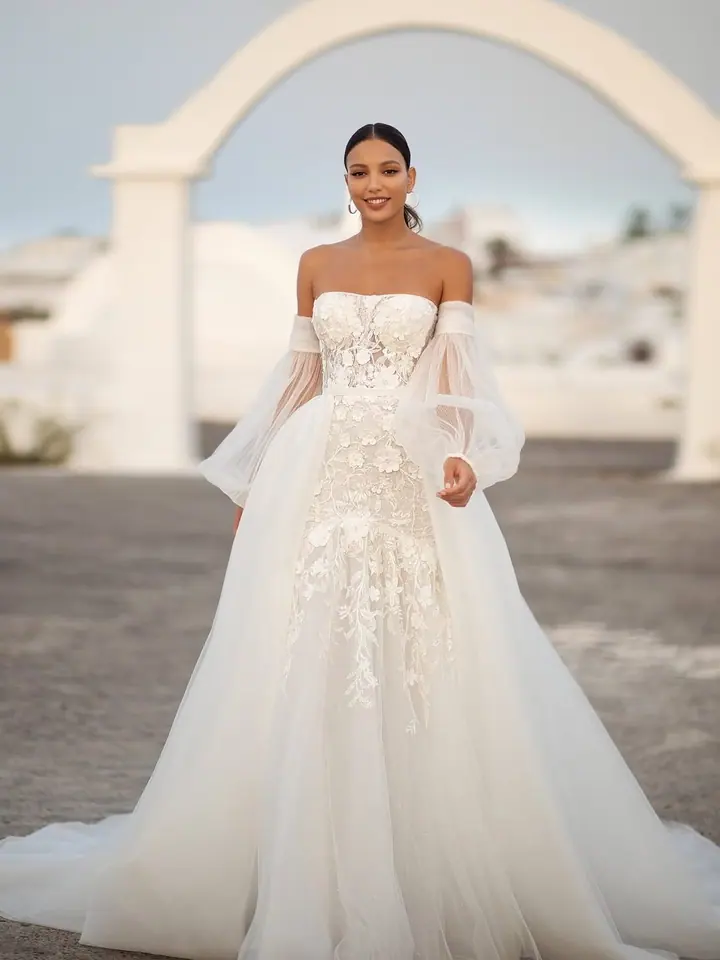
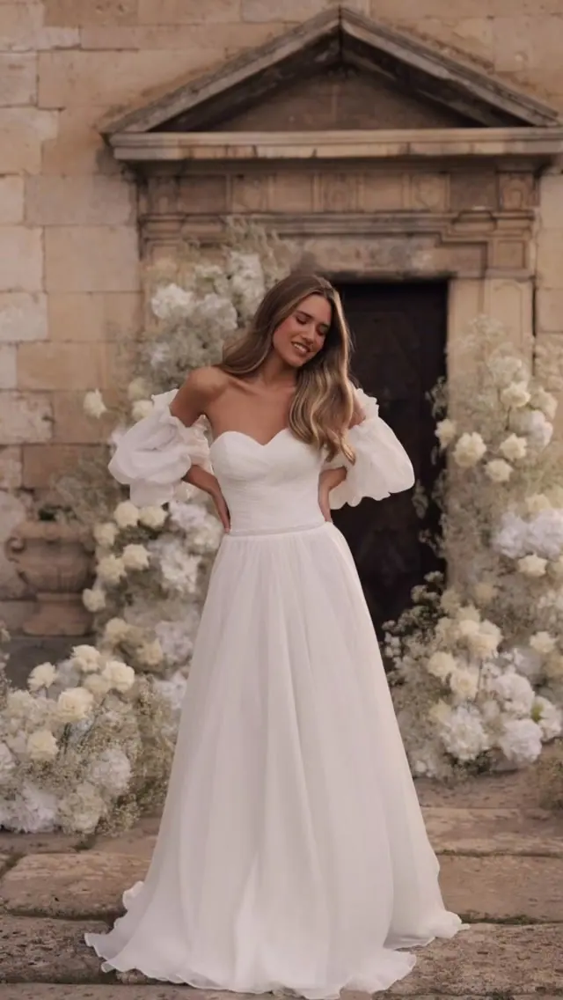
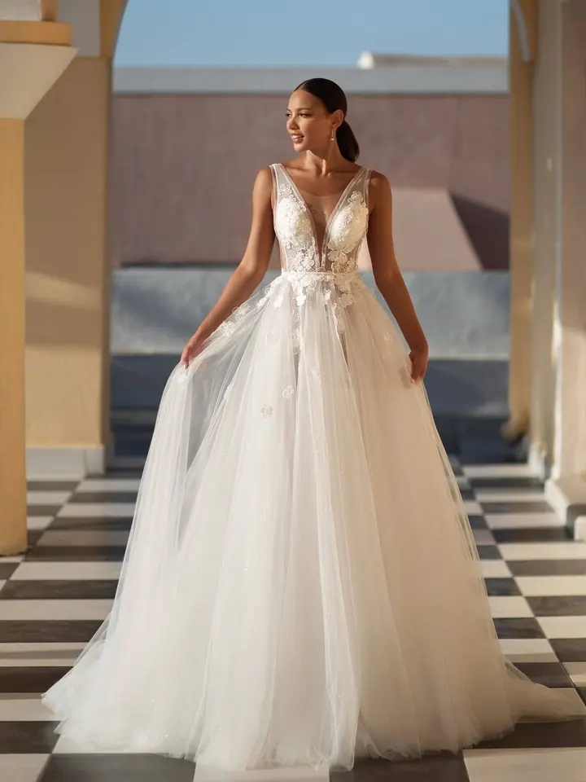
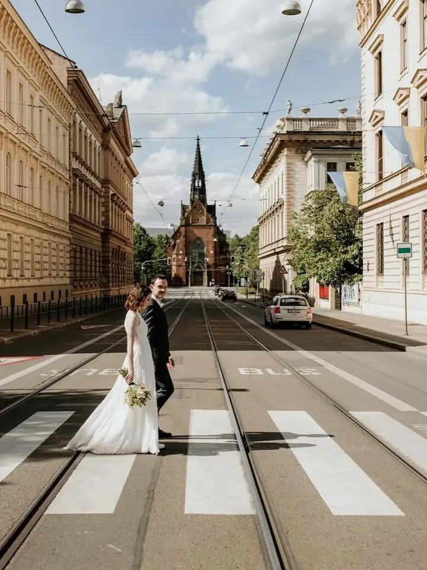

Zkouška svatebních šatů
Zkouška u nás není jen zkoušení. Je to 90 minut jen pro vás, v klidu, soukromí a s pohoštěním, a nic vás nezavazuje.




Jmenuji se Petra Starnovská a v Břeclavi otevírám svatební salon, kde si můžete v klidu vybrat své šaty. Zkouška u nás trvá 90 minut jen pro vás, s pohoštěním a vašimi nejbližšími. A když budete chtít, ráda se postarám i o průběh celého svatebního dne.
Více o mně„Nevytvářím svatby podle šablony, vytvářím příběhy, ve kterých se poznáte.“
— Petra Starnovská
Zkouška u nás není jen zkoušení. Je to 90 minut jen pro vás, v klidu, soukromí a s pohoštěním, a nic vás nezavazuje.
Postarám se o vítání a usazení hostů, příchod k oltáři i gratulace. Když budete chtít, provedu vás jako moderátorka i krájením dortu, prvním tancem a zábavou.
Vy sníte a já tvořím. Od první schůzky po první tanec jsem vaším jediným parťákem a hlídám, aby tiskoviny, květiny, dekorace i catering mluvily stejným jazykem.
Společně projdeme celý koncept od stylu, výzdoby a květin až po organizaci dne. Odejdete s jasnou představou, konkrétními kroky a větším klidem.
Jsem Petra a můj salon je místo pro nevěsty, které chtějí víc než jen zkoušku šatů. Vím, že výběr šatů je jeden z nejhezčích momentů celé přípravy, a proto si na něj u mě máte vzít čas. Žádný spěch, žádný závazek, jen klid, soukromí a sklenka něčeho dobrého.
Salon právě otevírám v Břeclavi, v Národních hrdinů v horním patře budovy bývalé Komerční banky. Vítám u sebe i nevěsty z Rakouska a těm, kdo cestují z větší dálky, ráda nabídnu sobotní termín po telefonické domluvě.
Kromě šatů se věnuji koordinaci svateb. Každá svatba má svůj rytmus a atmosféru, a tak cenu i rozsah vždy skládám podle vašich přání. Můžete se na mě spolehnout jen na obřad, na celý den s moderováním, nebo mi svěřit celou svatbu na klíč.
Zkoušku si zarezervujete v online kalendáři, termíny vypisuji vždy na 3 měsíce dopředu. Do poznámky můžete napsat názvy šatů, které se vám líbí.
Čeká vás 90 minut jen pro vás, v klidu, soukromí a s pohoštěním. Doprovodit vás mohou nejvýš 4 blízcí.
Zkouška není závazná. Když najdete své vysněné šaty, platí se záloha 50 % a rezervační poplatek 500 Kč se odečte z ceny zapůjčení.
Pokud budete chtít, budu s vámi i v den D. Postarám se o hosty, dodavatele a hladký průběh, abyste si den mohli užít se svými blízkými.
Není. Je to čas, kdy můžete v klidu objevovat, co vám opravdu sluší.
Rezervační poplatek je 500 Kč a platí se na místě. Když si u mě šaty vyberete, odečtu ho z ceny zapůjčení. Při zrušení rezervace je poplatek nevratný.
Doprovodit vás mohou nejvýš 4 osoby, tak aby zkouška zůstala klidná a jen vaše.
Ano, nejpozději 3 dny předem, ideálně telefonicky na čísle +420 737 912 634.
Poradenství stojí 2 500 Kč za 2 hodiny, koordinace začíná na 7 000 Kč a svatba na klíč na 45 000 Kč. Přesnou cenu vždy skládám podle vašich přání a rozsahu.
info@starnovska.cz
Břeclav